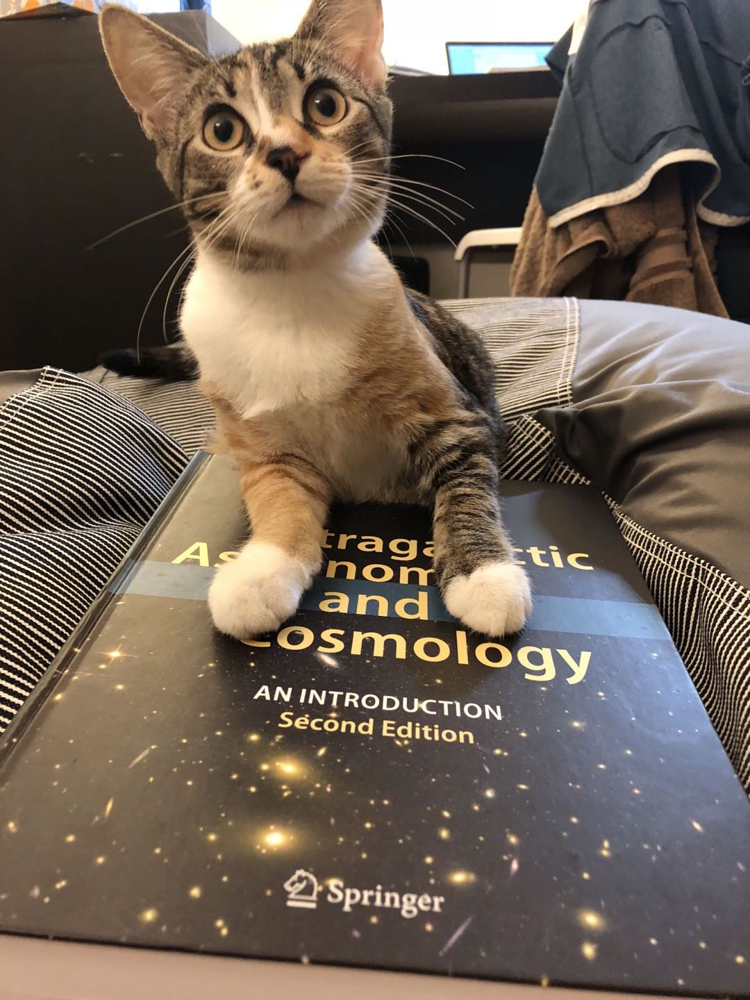

I'm currently a software engineer at Facebook. I was born and raised in China and I came to the States in 2015 for my undergraduate education. I graduated in 2018 from University of California, San Diego with a major in Mathematics-Computer Science and a minor in Cognitive Science. After that, I continued my education and graduated in 2019 from "Master of Computational Data Science" at Carnegie Mellon University, with a concentration on analytics. If you are interested in a more detailed overview of my experience, please feel free to navigate to my CV/LinkedIn, or even ping me on LinkedIn!
Oh, and I got two cats. This girl's name is 小十五; in English, it's "little fifteen". 